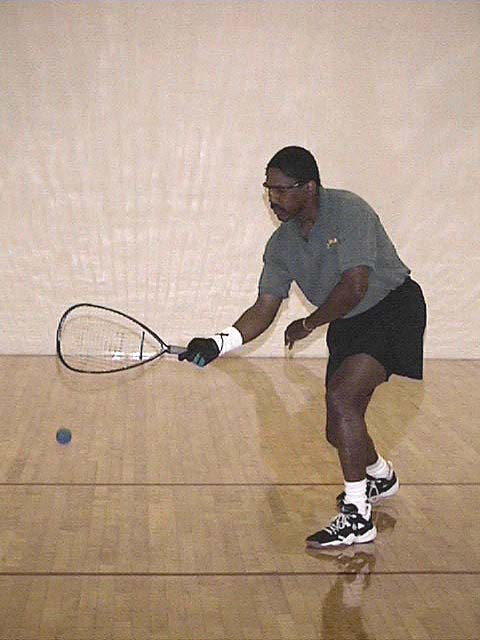
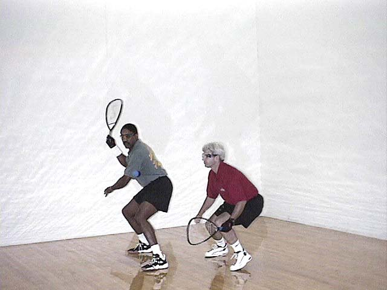

Training
Despite a shoulder injury (as a result of a beach volleyball tournament), Edwards saw his forehand stroke develop significantly over the summer months.
The shoulder injury, however, seriously affected his backhand and follow-through.Not only did his team not win the volleyball tourney, but he ended up compensating for the pain in his swing—thereby dramatically affecting a swing where a two-degree difference translates to an 8-inch variance by the time it gets to the front wall.(Can you hear the violins playing?)
Of course, if he had listened to his Physical Therapist... the injury never would have gotten that bad.
Even better... if he had listened to his wife, he never would have had the injury to begin with!/p>


Psychological Warfare
Hanno (team coach) was basically a slave driver during the training months. A top-ranked player in New York State, he never let up on the training Jamaican. Hanno enjoyed himself as he took advantage of the opportunity to test John's mental game.
The psychological warfare would drive any normal human being to start singing Barry Manilow songs. But Edwards needed to toughen up his mental game, so he stuck to Bob Marley tunes instead.
Traditional Training Program
For Jamaican Team Members Only
Fuel & Nutrition
Jerk Chicken, rice and peas, plantains, okra and dumplings.
(And that's only breakfast!)Standard Daily Exercise Routine
Morning Routine: Wake up (Jamaicans don't take much for granted). Standard morning hygiene activities are usually performed along to Third World or Ziggy. Then go to work—unlike other countries, our players can't play ball full-time... that would mean we were taking this thing too seriously!
On-The-Job Conditioning: While at work, exercise your Caribbean cognitive skills by making your co-workers laugh so hard that they get in trouble with the boss (a standard fare of made-up island stories should provide enough humor). Plan a party at least once per day (mandatory).
Court Strategy: After work, show up 10–15 minutes late at the racquetball courts (it is genetically impossible for people who grew up on a beach to show up on time for everything). Play more games than your body thought you should. Always laugh and tell jokes during the game no matter what the score and no matter how serious your competitor is. In fact, we are required to tell more jokes if the dude is a really serious player. Nothing upsets them more than to think you're having that much fun... especially if they're not playing well... plus it sets an example for the children.
The Path to Dominance: Let's face it, eventual dominance in North American sports is only the second step to world dominance. Getting them hooked on our music was step one. Shower up next (it's good for public relations), eat, and then argue. It doesn't matter who with or what about—just get it out of your system! Eat some more, preferably with the person you just argued with. Remember: Jamaicans always buy... unless the other person insists.
Nighttime Footwork: Go home (you knew it had to come to this eventually). Turn up the music to continue your step toward world dominance. Dance till you sweat like a pig, then dance and sing some more even if you are alone. It is your patriotic duty, plus it helps your footwork on the court! Eat again. Plan tomorrow's social calendar but leave all times flexible. Find one final person to argue (sorry, I meant *debate*) with over something you don't really care about or know anything about. Eat again (hey, this is a tough training schedule), go to bed, or simply fall into it, and cycle back to the top to start over again!